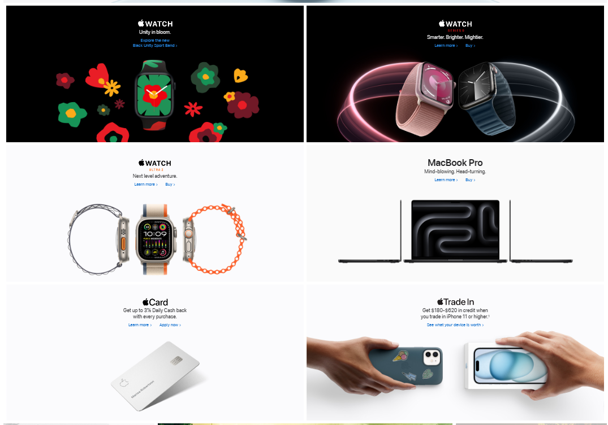
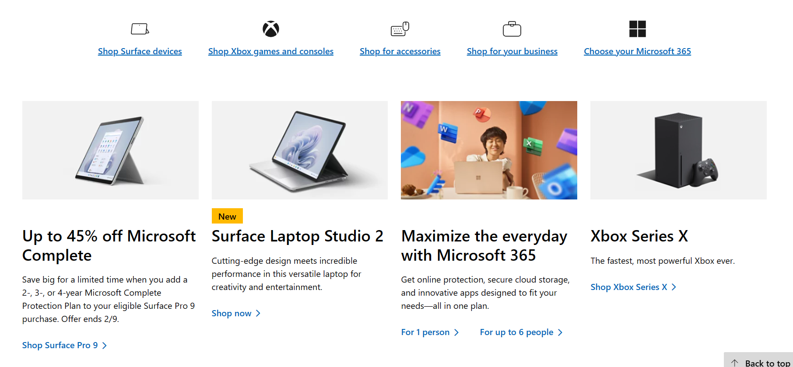

Hick's Law
Apple
Link to Website Apple doesn't present an overwhelming number of options on their home page. In a normal view of the website, only 4 of the options in the picture are visible at a time.
Contrast
Linked in has a dark theme with bright, colored icons that stand out. These icons that stand out are how a user interacts with the site.
PARC: Alignment
Microsoft
Link to Website In the example picture, the icons in the top and the images down below are all horizontally aligned. This gives the website a cleaner design.